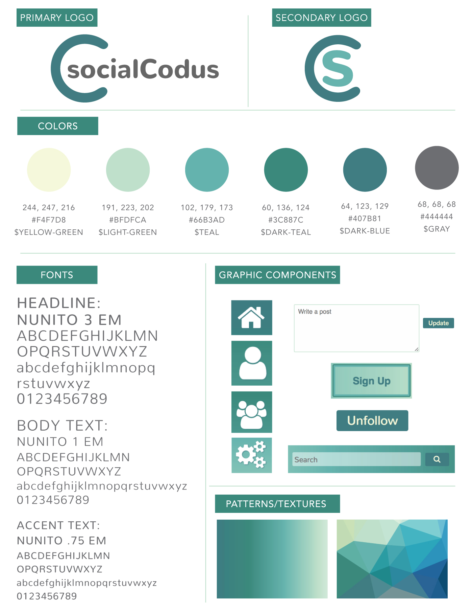
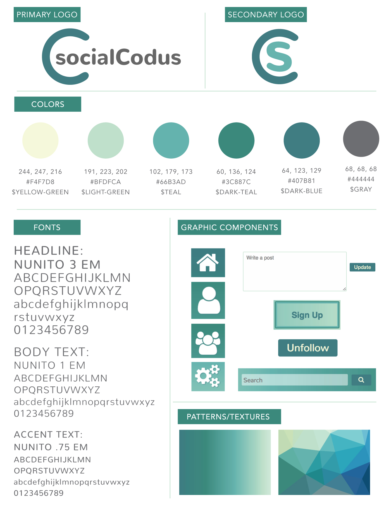
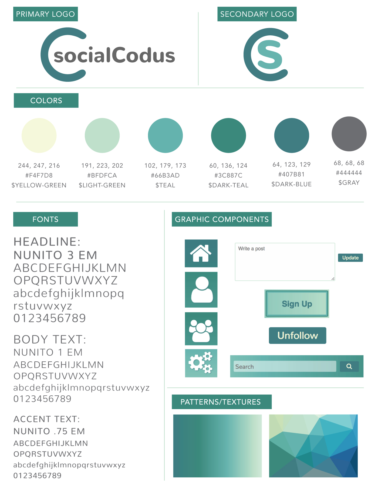

socialCodus is social media website for Epicodus. It was a group week project, which consisted of two back end developers using C# and two front end developers handling the design process, brand identity and CSS/Sass. We were given four days to plan and program. We spent the first half of the first day planning and deciding what exactly we wanted the app to be. Members signed up on socialCodus can post status updates, like and dislike comments, add other members as friends, as well as unfriend them. The home page also contains a feed of all of your friends' statuses.
I worked with Rose Sponseller to create the entire layout of the site, the color palette, brand identity and the actual coding out of the site was our duty as well. We worked very closely with out C# counterparts, we took into account the HTML they would have to add and we responded by frequent check ins with them and occasionally we would code on their Windows computer to make sure things ran as smoothly as possible.
